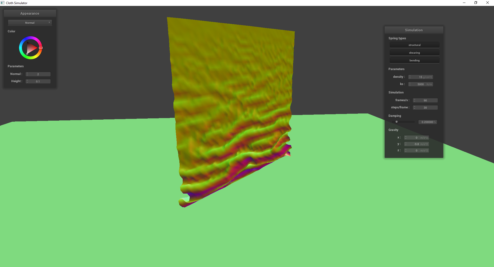

Overview
In this project, I simulated cloth physics based on a system of PointMasses and Springs. First, I built a grid of these PointMasses and Springs to represent the cloth.
In order to simulate the base physics, I calculated the total forces from external and internal sources and used them to compute each PointMass's position at every time step.
I then handled the cloth's collisions with both other objects and itself. Finally, I implemented different cloth shaders by modifying vertex and fragment shaders.
Part I: Masses and springs
 Cloth Wireframe, All constraints
Cloth Wireframe, All constraints
|
Cloth Wireframe, No shearing constraints
|
Cloth Wireframe, Only shearing constraints
Part II: Simulation via Numerical Integration
|
Cloth Simulation (pinned2.json), ks = 50 N/m
|
Cloth Simulation (pinned2.json), ks = 50000 N/m
|
Cloth Simulation (pinned2.json), ks = 5000 N/m (default)
Changing the spring constant (ks) changes the strength of the springs in the cloth. A very low ks results in low spring strength, made evident by how loose and sagging the cloth is through the simulation. A high ks results in high
spring strength, made evident by how taut the cloth is through the simulation.
|
Cloth Simulation (pinned2.json), density = 1.5 g/cm^2
|
 Cloth Simulation (pinned2.json), density = 150 g/cm^2
Cloth Simulation (pinned2.json), density = 150 g/cm^2
|
Cloth Simulation (pinned2.json), density = 15 g/cm^2 (default)
Changing the density changes the effect of gravity on the cloth. A very low density means gravity has less of an effect on the cloth, resulting in a similar effect to high ks. A high density means
that gravity has more of an effect on the cloth, resulting in a similar effect to very low ks. The difference is that internal spring strength hasn't changed, so the cloth itself isn't as loose.
 Cloth Simulation (pinned2.json), damping = 0.05
Cloth Simulation (pinned2.json), damping = 0.05
|
 Cloth Simulation (pinned2.json), damping = 1.0
Cloth Simulation (pinned2.json), damping = 1.0
|
Cloth Simulation (pinned2.json), damping = 0.2 (default)
Changing the damping changes how fast the cloth loses energy. Very low damping means that the cloth loses energy at a slower rate, resulting in a lot more movement happening at a faster rate.
High damping means that the cloth loses energy very fast, resulting in much slower movement.
Cloth Simulation (pinned2.json), Final resting state, default parameters
Part III: Handling collisions with other objects
|
Sphere.json, Final resting state, ks = 5000
|
Sphere.json, Final resting state, ks = 500
|
Sphere.json, Final resting state, ks = 50000
Lower ks leads to a more droopy cloth with many folds due to low internal spring strength. Higher ks leads to a stiffer cloth with less folds due to high internal spring strength.
Plane.json, Final resting state, default parameters. Green on green is kinda ugly, but oh well.
Part IV: Handling self-collisions
selfCollision.json, Default parameters
|

selfCollision.json, Default parameters, Early self-collision
|
selfCollision.json, Default parameters, Advanced self-collision
|
selfCollision.json, Default parameters, Restful state
 selfCollision.json, ks = 500
selfCollision.json, ks = 500
|
selfCollision.json, ks = 50000
|
selfCollision.json, ks = 5000 (default)
Lower ks results in a lot more self-collisions, which leads to a lot of folds in the cloth. Higher ks results in less self-collisions, which leads to a smaller number of folds in the cloth.
|
selfCollision.json, density = 1.5 g/cm^2
|
 selfCollision.json, density = 150 g/cm^2
selfCollision.json, density = 150 g/cm^2
|
selfCollision.json, density = 15 g/cm^2 (default)
Following the same pattern as previous results, lower density creates results similar to high ks, while higher density creates results similar to low ks.
Part V: Handling self-collisions
A shader program is a program that adds lighting and light-related effects to scenes. Vertex shaders take in each vertex and translate their 3D positions to 2D screen coordinates. Fragment
shaders take the vertex shader output and calculate the color based on the geometric data of the vertex and the light source.
The Blinn-Phong shading model is a method of shading that breaks down illumination into ambient, diffuse, and specular components, which are then added together to produce the final shading effect.
The ambient component consists of the basic, uniform color of an object. The diffuse component consists of the multi-directional light effects that are independent of view direction.
Finally, the specular component consists of the direct reflection off the light source, dependent on view direction.
|
Blinn-Phong Shading, Ambient component only
|
Blinn-Phong Shading, Diffuse component only
|
|
Blinn-Phong Shading, Specular component only
|
Blinn-Phong Shading, Full
|
|
Texture-Mapping Shader, Custom texture
|
Glorious custom texture image, made in MS Paint
|
|
Bump Mapping sphere, texture_3
|
Bump Mapping cloth, texture_3
|
|
Displacement Mapping sphere, texture_3
|
Displacement Mapping cloth, texture_3
|
The difference between Bump mapping and Displacement mapping is that Displacement mapping actually modifies the vertex positions and normals in the vertex shader to reflect the geometry of the texture,
which Bump mapping does not do.
|
Bump Mapping sphere, texture_3, vertical/horizontal resolution 16
|
Bump Mapping cloth, texture_3, vertical/horizontal resolution 16
|
|
Displacement Mapping sphere, texture_3, vertical/horizontal resolution 16
|
 Displacement Mapping cloth, texture_3, vertical/horizontal resolution 16
Displacement Mapping cloth, texture_3, vertical/horizontal resolution 16
|
|
Bump Mapping sphere, texture_3, vertical/horizontal resolution 128
|
Bump Mapping cloth, texture_3, vertical/horizontal resolution 128
|
|
Displacement Mapping sphere, texture_3, vertical/horizontal resolution 128
|
Displacement Mapping cloth, texture_3, vertical/horizontal resolution 128
|
Changing the coarseness of the render doesn't have much of an effect on bump mapping. For displacement mapping, however, finer renders will cause the displacements to match
the texture geometry more exactly, and even small height differences in the texture will be reflected. More coarse renders will do the opposite.
|
Mirror Shader Sphere
|
Mirror Shader Cloth
|